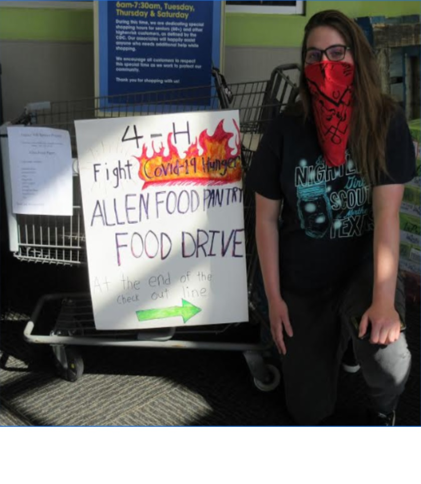
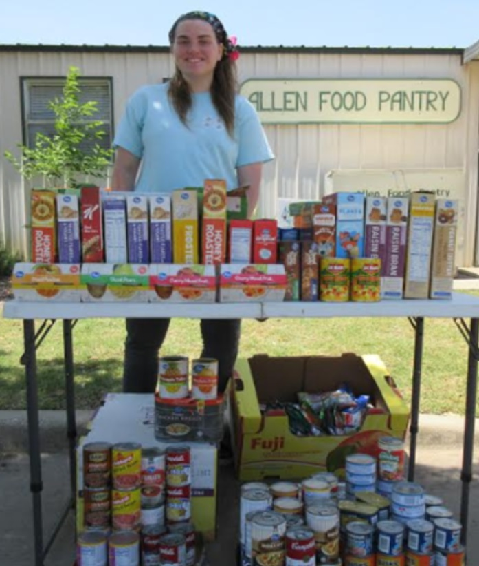

Prothonotary Warbler Conservation Project
birbs birbs birbs
Covid-19 Food Drive

In 2020, our world suffered to a major crisis: the Corona Virus. Millions lost their lives, and millions more
lost their jobs.
As corona was beginning to emerge in China, I led a project to collect food for the North Texas Food Bank and set
it up so my 4-H club could come volunteer with me at the North Texas Food Pantry to package donation boxes that are
sent to local families in need. At the end of the day, we had packed 525 boxes and a total of 8,596 meals.

Officer Positions
4-H Vice President of Programs
la la la
THEO Private School Vice President of Service Projects
bought Mrs. Schwartz a table
Emily's Place
Food Drive
Etc